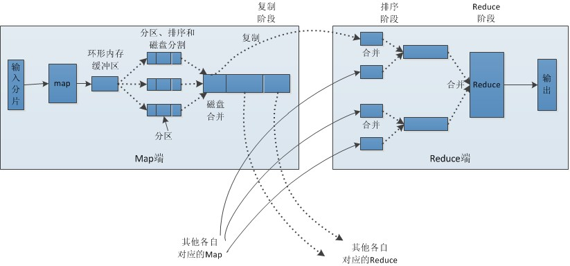

第15章 大数据与MapReduce
大数据 概述
大数据: 收集到的数据已经远远超出了我们的处理能力。
大数据 场景
假如你为一家网络购物商店工作，很多用户访问该网站，其中有些人会购买商品，有些人则随意浏览后就离开。
对于你来说，可能很想识别那些有购物意愿的用户。
那么问题就来了，数据集可能会非常大，在单机上训练要运行好几天。
接下来：我们讲讲 MapRedece 如何来解决这样的问题
MapRedece
Hadoop 概述
Hadoop 是 MapRedece 框架的一个免费开源实现。
MapReduce: 分布式的计算框架，可以将单个计算作业分配给多台计算机执行。
MapRedece 原理
MapRedece 工作原理
- 主节点控制 MapReduce 的作业流程
- MapReduce 的作业可以分成map任务和reduce任务
- map 任务之间不做数据交流，reduce 任务也一样
- 在 map 和 reduce 阶段中间，有一个 sort 和 combine 阶段
- 数据被重复存放在不同的机器上，以防止某个机器失效
- mapper 和 reducer 传输的数据形式为 key/value对

MapRedece 特点
优点: 使程序以并行的方式执行，可在短时间内完成大量工作。
缺点: 算法必须经过重写，需要对系统工程有一定的理解。
适用数据类型: 数值型和标称型数据。
Hadoop 流(Python 调用)
理论简介
例如: Hadoop流可以像Linux命令一样执行
cat inputFile.txt | python mapper.py | sort | python reducer.py > outputFile.txt
类似的Hadoop流就可以在多台机器上分布式执行，用户可以通过Linux命令来测试Python语言编写的MapReduce脚本。
实战脚本
# 测试 Mapper
# Linux
cat db/15.BigData_MapReduce/inputFile.txt | python src/python/15.BigData_MapReduce/mrMeanMapper.py
# Window
# python src/python/15.BigData_MapReduce/mrMeanMapper.py < db/15.BigData_MapReduce/inputFile.txt
# 测试 Reducer
# Linux
cat db/15.BigData_MapReduce/inputFile.txt | python src/python/15.BigData_MapReduce/mrMeanMapper.py | python src/python/15.BigData_MapReduce/mrMeanReducer.py
# Window
# python src/python/15.BigData_MapReduce/mrMeanMapper.py < db/15.BigData_MapReduce/inputFile.txt | python src/python/15.BigData_MapReduce/mrMeanReducer.py
MapReduce 机器学习
Mahout in Action
- 简单贝叶斯：它属于为数不多的可以很自然的使用MapReduce的算法。通过统计在某个类别下某特征的概率。
- k-近邻算法：高维数据下（如文本、图像和视频）流行的近邻查找方法是局部敏感哈希算法。
- 支持向量机(SVM)：使用随机梯度下降算法求解，如Pegasos算法。
- 奇异值分解：Lanczos算法是一个有效的求解近似特征值的算法。
- k-均值聚类：canopy算法初始化k个簇，然后再运行K-均值求解结果。
使用 mrjob 库将 MapReduce 自动化
理论简介
- MapReduce 作业流自动化的框架：Cascading 和 Oozie.
- mrjob 是一个不错的学习工具，与2010年底实现了开源，来之于 Yelp(一个餐厅点评网站).
python src/python/15.BigData_MapReduce/mrMean.py < db/15.BigData_MapReduce/inputFile.txt > db/15.BigData_MapReduce/myOut.txt
实战脚本
# 测试 mrjob的案例
# 先测试一下mapper方法
# python src/python/15.BigData_MapReduce/mrMean.py --mapper < db/15.BigData_MapReduce/inputFile.txt
# 运行整个程序，移除 --mapper 就行
python src/python/15.BigData_MapReduce/mrMean.py < db/15.BigData_MapReduce/inputFile.txt
项目案例：分布式 SVM 的 Pegasos 算法
Pegasos是指原始估计梯度求解器(Peimal Estimated sub-GrAdient Solver)
Pegasos 工作原理
- 从训练集中随机挑选一些样本点添加到待处理列表中
- 按序判断每个样本点是否被正确分类
- 如果是则忽略
- 如果不是则将其加入到待更新集合。
- 批处理完毕后，权重向量按照这些错分的样本进行更新。
上述算法伪代码如下：
将 回归系数w 初始化为0
对每次批处理
随机选择 k 个样本点(向量)
对每个向量
如果该向量被错分：
更新权重向量 w
累加对 w 的更新
开发流程
收集数据：数据按文本格式存放。
准备数据：输入数据已经是可用的格式，所以不需任何准备工作。如果你需要解析一个大规模的数据集，建议使用 map 作业来完成，从而达到并行处理的目的。
分析数据：无。
训练算法：与普通的 SVM 一样，在分类器训练上仍需花费大量的时间。
测试算法：在二维空间上可视化之后，观察超平面，判断算法是否有效。
使用算法：本例不会展示一个完整的应用，但会展示如何在大数据集上训练SVM。该算法其中一个应用场景就是本文分类，通常在文本分类里可能有大量的文档和成千上万的特征。
收集数据
文本文件数据格式如下：
0.365032 2.465645 -1
-2.494175 -0.292380 -1
-3.039364 -0.123108 -1
1.348150 0.255696 1
2.768494 1.234954 1
1.232328 -0.601198 1
准备数据
def loadDataSet(fileName):
dataMat = []
labelMat = []
fr = open(fileName)
for line in fr.readlines():
lineArr = line.strip().split('\t')
# dataMat.append([float(lineArr[0]), float(lineArr[1]), float(lineArr[2])])
dataMat.append([float(lineArr[0]), float(lineArr[1])])
labelMat.append(float(lineArr[2]))
return dataMat, labelMat
分析数据: 无
训练算法
def batchPegasos(dataSet, labels, lam, T, k):
"""batchPegasos()
Args:
dataMat 特征集合
labels 分类结果集合
lam 固定值
T 迭代次数
k 待处理列表大小
Returns:
w 回归系数
"""
m, n = shape(dataSet)
w = zeros(n) # 回归系数
dataIndex = range(m)
for t in range(1, T+1):
wDelta = mat(zeros(n)) # 重置 wDelta
# 它是学习率，代表了权重调整幅度的大小。（也可以理解为随机梯度的步长，使它不断减小，便于拟合）
# 输入T和K分别设定了迭代次数和待处理列表的大小。在T次迭代过程中，每次需要重新计算eta
eta = 1.0/(lam*t)
random.shuffle(dataIndex)
for j in range(k): # 全部的训练集 内循环中执行批处理，将分类错误的值全部做累加后更新权重向量
i = dataIndex[j]
p = predict(w, dataSet[i, :]) # mapper 代码
# 如果预测正确，并且预测结果的绝对值>=1，因为最大间隔为1, 认为没问题。
# 否则算是预测错误, 通过预测错误的结果，来累计更新w.
if labels[i]*p < 1: # mapper 代码
wDelta += labels[i]*dataSet[i, :].A # 累积变化
# w通过不断的随机梯度的方式来优化
w = (1.0 - 1/t)*w + (eta/k)*wDelta # 在每个 T上应用更改
# print '-----', w
# print '++++++', w
return w
完整代码地址: https://github.com/apachecn/AiLearning/blob/master/src/py2.x/ml/15.BigData_MapReduce/pegasos.py
运行方式：python /opt/git/MachineLearning/src/python/15.BigData_MapReduce/mrSVM.py < db/15.BigData_MapReduce/inputFile.txt
MR版本的代码地址: https://github.com/apachecn/AiLearning/blob/master/src/py2.x/ml/15.BigData_MapReduce/mrSVM.py
- 作者：片刻 小瑶
- GitHub地址: https://github.com/apachecn/AiLearning
- 版权声明：欢迎转载学习 => 请标注信息来源于 ApacheCN